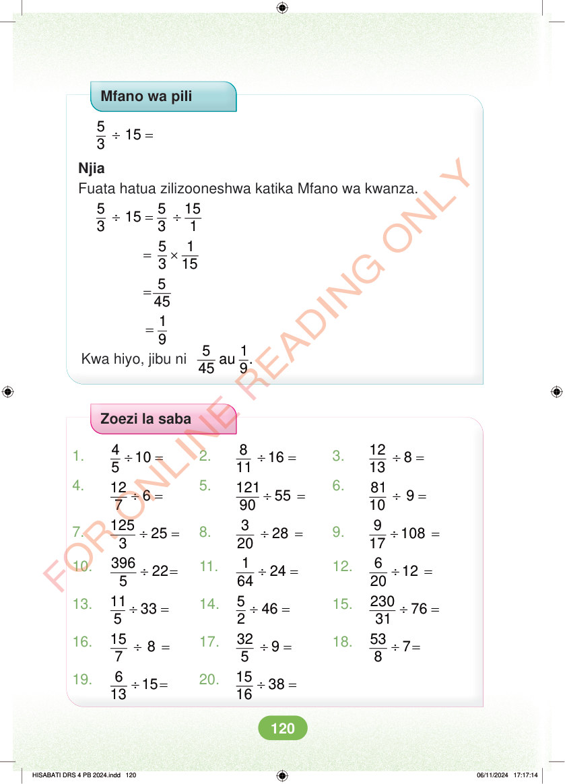

Mfano wa pili ÷ = 5 15 3 Njia Fuata hatua zilizooneshwa katika Mfano wa kwanza. ÷ = ÷ 5 5 15 15 3 3 1 = × 5 1 3 15 = 5 = 1 9 Kwa hiyo, jibu ni 5 1 au . 45 9 Zoezi la saba 1. ÷ = 4 10 5 2. ÷ = 8 16 11 3. ÷ = 12 8 13 4. ÷ = 12 6 7 5. ÷ = 121 55 90 6. ÷ = 81 9 10 7. ÷ = 125 25 3 8. ÷ = 3 28 20 9. ÷ = 9 108 17 10. ÷ = 396 22 5 11. ÷ = 1 24 64 12. ÷ = 6 12 20 13. ÷ = 11 33 5 14. ÷ = 5 46 2 15. ÷ = 230 76 31 16. ÷ = 15 8 7 17. ÷ = 32 9 5 18. ÷ = 53 7 8 19. ÷ = 6 15 13 20. ÷ = 15 38 16 HISABATI DRS 4 PB 2024.indd 120 HISABATI DRS 4 PB 2024.indd 120 06/11/2024 17:17:14 06/11/2024 17:17:14